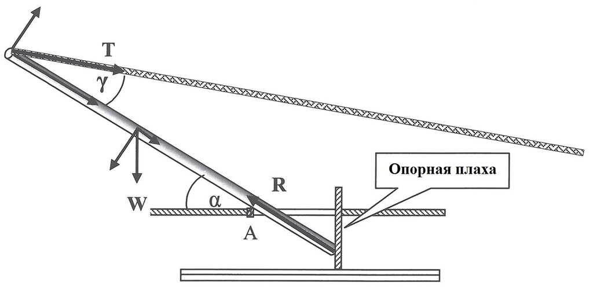
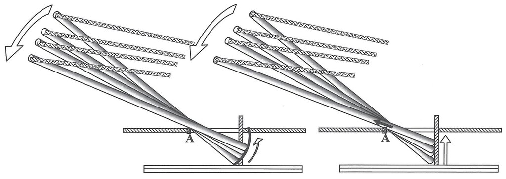
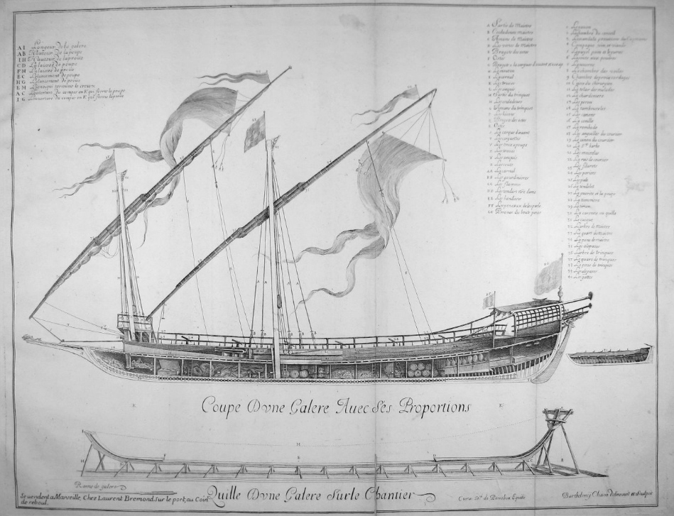
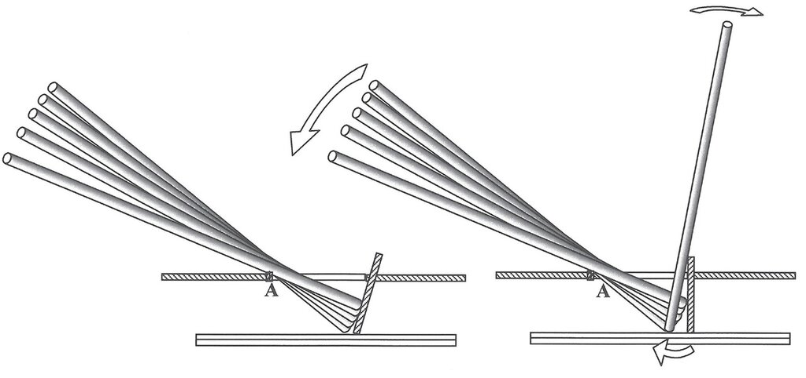

Тяжело ли рубить мачту?
Ты руби дерево-то, чтоб под силу было.
Островский. Последняя жертва
Henri Sbonski de Passebon . Галера «Патрона», 1690.
В этой части нашего рассказа о том, как рубили мачты на галерах, мы обратимся к упомянутой ранее статье Joseph Eliav , Folding and Unfolding of Early Modern Galley Masts.
На мачту действуют две силы: ее вес W и сила натяжения верхнего троса T. Если разложить эти силы на составляющие, одна из которых будет направлена вдоль оси мачты, то мы получим совокупную силу, которая порождает равную ей, но противоположно направленную силу R реакции со стороны опорной плахи.

А теперь посмотрим на виртуальную и реальную траекторию движения шпора мачты:

Дуга на левой части схемы представляет собой траекторию, по которой двигалась бы пятка мачты, если бы не было опорной плахи и мачта свободно вращалась вокруг точки А двойного бимса, на который она опирается. Эта дуга представляет собой часть окружности Р, которую изобразил на своем чертеже Кресченцио, а мы показали в прошлый раз. Однако движению пятки по этой траектории мешает опорная плаха. Шпор мачты при ее наклоне должна двигаться вертикально вверх вдоль плахи, а вся мачта при этом должна скользить вверх вдоль своей оси, как показано на правой части рисунка.
Но каждый, кто хоть раз проделывал подобные операции с тяжелыми бревнами у себя на даче, или ставил столб, или опору антенны, поймет, что это бревно может попросту заклинить, когда оно коснется бимса в точке А, если не хватит сил для преодоления сопротивления движению пятки вдоль опорной плахи. Имеется ли у нас информация, которая показала бы, как выходили из затруднительного положения моряки галер той эпохи? Прямых свидетельств нет, но на изображениях галер того времени можно найти два намека на возможное решение проблемы.
Во-первых, имеются изображения, показывающие, что опорная плаха (а вместе и ней и мачта) не вертикальна, а несколько наклонена к носу. Возьмем, хотя бы, сечение галеры из альбома Henri Sbonski de Passebon (1690 г. ). Автор альбома – капитан галер Франции из Марселя, который о галерах знал все. Исполнитель гравюры на меди - Claude Randon - известный точностью воспроизведения деталей. Это, пожалуй,одно из самых точных изображений галеры La Patronne, второй в иерархии галер после La Reale.

Раскрашенная гравюра с изображением этой галеры приведена в начале поста.
Мы видим, что наклон опорной плахи примерно совпадает с касательной к дуге движения пятки мачты, поэтому пятка будет практически скользить по плахе, не создавая помех для ее опускания (левая часть рисунка внизу).

Вторым возможным решением проблемы может быть деталь из описания Фуртенбаха, о котором мы говорили прошлый раз, т.е. система шип-паз для крепления шпора мачты.
Если перед началом наклона мачты к носу матросы потянут ее тросом ЕН к корме (см. схему из трактата Кресченцио в предыдущем посте) на расстояние, которое допускает геометрия шипа и паза, т.е. около 40 см, и тем самым отодвинут основание мачты от опорной плахи, то новое положение шпора станет точкой вращения мачты и сама мачта войдет в соприкосновение с опорной плахой лишь на последнем этапе ее наклона (правая часть схемы).
О силах, действующих в процессе всей этой операции продолжим разговор в следующий раз.